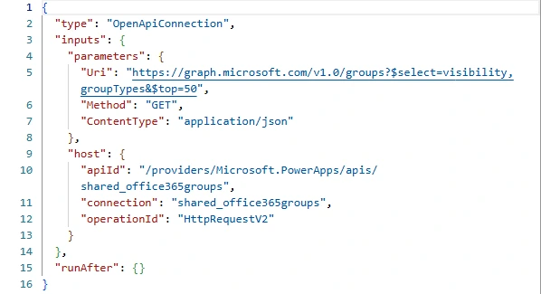
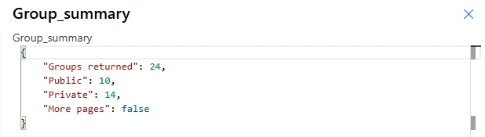

- Power Automate
- Level 9 · Integration and AI · 3 of 10
Calling Microsoft Graph from a flow
Microsoft Graph is the single API behind Microsoft 365: users, groups, Teams, mail, calendars, files. Connectors cover the common parts. For the rest, a few standard connectors include a Send an HTTP request action that calls Graph with your own sign-in, so you don't need the premium HTTP action or an app registration.
Which connector to use
| Connector | Graph paths it accepts |
|---|---|
| Office 365 Groups: Send an HTTP request | Groups, users and related paths (for example /groups, /users). |
| Office 365 Outlook: Send an HTTP request | Mail, calendar and contacts paths (/me/messages, /me/events). |
| HTTP with Microsoft Entra ID (premium) | Any Graph path, with a pre-authorised connection. |
Each action only allows the paths its connector is meant for. If a path is rejected, try the connector that matches the data.
Counting groups by visibility
The demo asks Graph for up to 50 groups, returning only two fields:

https://graph.microsoft.com/v1.0/groups?$select=visibility,groupTypes&$top=50| Piece | What it does |
|---|---|
v1.0 | The stable version. beta exists but can change without notice. |
/groups | The resource: all groups in the tenant. |
$select=visibility,groupTypes | Return only these fields. Smaller responses, faster flows. |
$top=50 | Up to 50 per page. |

Paging
Graph returns results in pages. When there are more, the response includes @odata.nextLink, a ready-made URL for the next page. The demo checks for it:
not(empty(outputs('Graph_get_groups')?['body/@odata.nextLink']))| Piece | What it does |
|---|---|
['body/@odata.nextLink'] | The next page's URL, if there is one. |
not(empty(...)) | True when another page exists. |
To read every page, use a Do until loop: call the next link, append the values to an array variable, and stop when there is no next link.
New to this? Start from the basics optional
API: a way for programs to ask a service for data. Graph is Microsoft 365's API.
Query options: the parts after ? such as $select, $filter and $top. They shape what comes back.
Build it step by step optional
- Try the request in Graph Explorer first, signed in as yourself, to see the response shape.
- In the flow add Office 365 Groups > Send an HTTP request.
- Paste the full URL, choose the method, and add a body for POST or PATCH.
- Use
body/valuefor lists of results, and handle@odata.nextLinkif there can be more than one page.
Common mistakes
- Using a Graph path the connector doesn't allow, then assuming Graph is down.
- Reading only the first page and reporting it as the total.
- Requesting every field. Use
$select. - Calling Graph in a tight loop. Graph throttles busy callers with HTTP 429; the default retry policy handles short bursts.